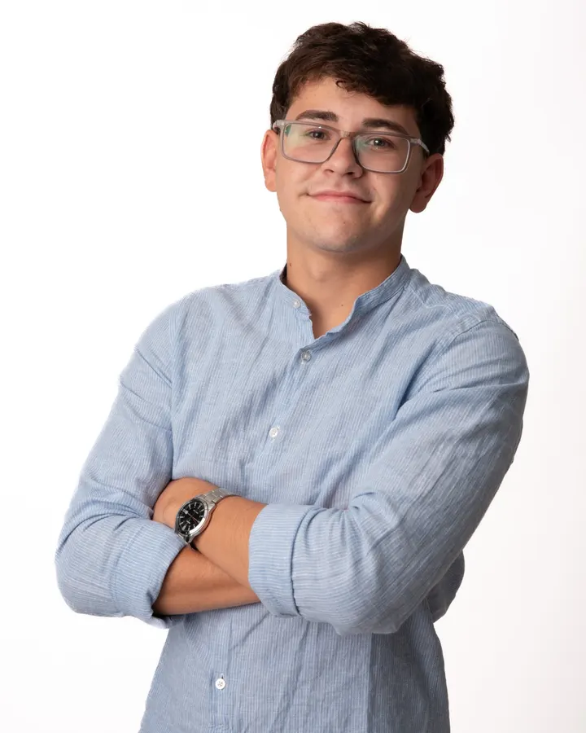

Moodboard · Futurista · Preciso · Cercano
Interfaces HUD, neón sobre fondo azul noche, grillas técnicas y un toque humano con foto real y violeta cálido.
neon_Acento lima neón
Grilla técnica 32 px
Luz violeta + lima
Aa
Space Grotesk / JetBrains Mono
Tipografía$ deploy --prod
✓ build ok · 0 errores
✓ lighthouse 92 · 100 · 100 · 100
✓ wcag 2.2 aa
$ status
disponible para pasantías▌Estética terminal

Cercano · foto realVer trabajosContactameBotones con glow
Next.jsFigmaUX/UI
Chips técnicos#0a0b14
#14173a
#c6ff3d
#9d90ff
#eceeff
#4535d6
PaletaRESEARCH → UI → CODEScanlines · proceso
FuturistaNeón, HUD, grillas y glow → color primario lima y anillos decorativos.
PrecisoEscala 1.25, múltiplos de 4, numeración 01–05 → sistema estricto.
CercanoFoto real, violeta cálido, voseo y modo claro → marca personal humana.